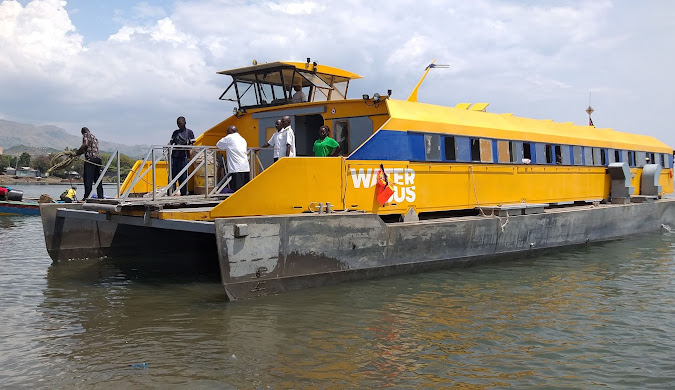

Mfangano Development Forum's History
Years ago, we came together to form this community-based organization (CBO), in pursuit of one voice where we engage amongst ourselves and with others, public or private entities, on socio economic development for the benefit of Mfangano Island, Suba West Sub-County.
Mfangano Development Forum (MDF) CBO) was registered on 30/8/2021, by "Awivuagano" whose aim is to promote the interest and welfare of the people of Mfangano Island, Suba West Sub-County, by coming up with initiatives to develop ourselves by transforming, enhancing, conserving, preserving, and thus uplifting every facet of life of the residents of the Sub County (comprising the 6 beautiful and magical islands of Mfangano, Takawiri, Remba, Ringiti, Atego and Risi) through our rallying call of
"Olugendo Lwifu" Olusuba for "our journey”.
| No. | Achievement | Details |
|---|---|---|
| 1 | Formal Registration of MDF | MDF was formally registered on 30/8/2021, with a structure of Council of Elders, Management Committee, and 9 Sub-committees. |
| 2 | MDF Launch & Leaders Conference | Held a successful launch and Mfangano Leaders Conference on 21/12/2021 at Peace Resort, Mfangano Island. |
| 3 | MCA Public Debate | Held a successful MCA public debate on 7/7/2022, leading to the election of Tom Raila Ojwang as Mfangano Ward MCA. |
| 4 | MDF SACCO Registration | Helped MDF SACCO register on 1/9/2022, encouraging members to enroll. |
| 5 | Inaugural AGM | Held the inaugural MDF AGM on 28/4/2023 at Peace Resort, Mfangano Island. |
| 6 | Strategic Master Plan | Passed a member-approved MDF Strategic Master Plan on 26/11/2023 for the period 2022 to 2027. |
| 7 | Suba Central Sub County Creation | Lobbied successfully for the creation and gazettement of Suba Central Sub County in March 2022 (now Suba West Sub County), with headquarters at Sena. |
| 8 | Sub County Headquarters Construction | Lobbied for the construction of Sub County Headquarters at Sena, with land acquired and site handed over to the contractor on 9/1/2025. |
| 9 | Mashujaa Day Celebrations | Lobbied for the hosting of the 2022 Mashujaa Day celebrations at Ramba Primary School, graced by Governor Gladys Wanga. |
| 10 | Agricultural Office Block | Lobbied the County Government to release the Agricultural office block for use by Sub County officers, with members contributing over KES 400,000 for rehabilitation. |
| 11 | Public Ferry Inclusion | Successfully lobbied for the inclusion of a Public Ferry in the National Government budget, with initial allocation of KES 300 million increased to KES 600 million. |
| 12 | Rehabilitation of Sena Pier | Lobbied Kenya Ports Authority (KPA) for the rehabilitation of the Pier in Sena, with public participation conducted in July 2023. |
| 13 | Mfangano Ring Road Upgrading | Successfully lobbied for the ongoing upgrading of the Mfangano Ring Road at a cost of KES 300 million. |
| 14 | Additional Power Generator | Lobbied for the supply, installation, and commissioning of an additional 2x500KVA diesel generator at Mfangano Power Station, with delivery on 29/1/2025. |
| 15 | Unified Working Channels | Created unified working channels with Hon. Millie Odhiambo, Hon. Tom Kajwang, and Governor Gladys Wanga. |
| 16 | Key Personnel Appointments | Secured key personnel appointments within the Homa Bay County Government, including 1 Chief Officer and 2 Directors. |
| 17 | Educational Support | Supported various educational activities, including Girls Scout trips, harambees, and sporting events. |
| 18 | Members Airtime Program (TINKA) | Launched the TINKA program, contributing KES 5,285 to MDF coffers from airtime purchases. |
| 19 | Money Market Investment | Invested KES 600,000 in a Money Market Account with Co-operative Bank, earning KES 64,000 in interest by April 2024. |
| 20 | Water Drilling and Pumping | Made water drilling and pumping a priority, with ongoing projects like the Water Storage and Treatment Plant. |
| 21 | Special Meetings and Visits | Conducted meetings with KPA MD and Chairman, and hosted visits by President William Ruto, PS Raymond Omollo, and Rt. Hon. Raila Odinga. |
| 22 | Promises from Visits | Secured promises for projects like the KES 100 million landing site, public ferry launch, and affordable housing. |
| 23 | Meeting with Governor Gladys Wanga | Discussed transport, health, education, and employment opportunities during a meeting on 19/1/2024. |
| 24 | MDF Benovolence Program (BRITAM) | Launched the Benovolence program; service offered by BRITAM Insurance. Co. |
Join the MDF network of changemakers today. Together, we can create a better future for Mfangano!.
Become Part of Our History